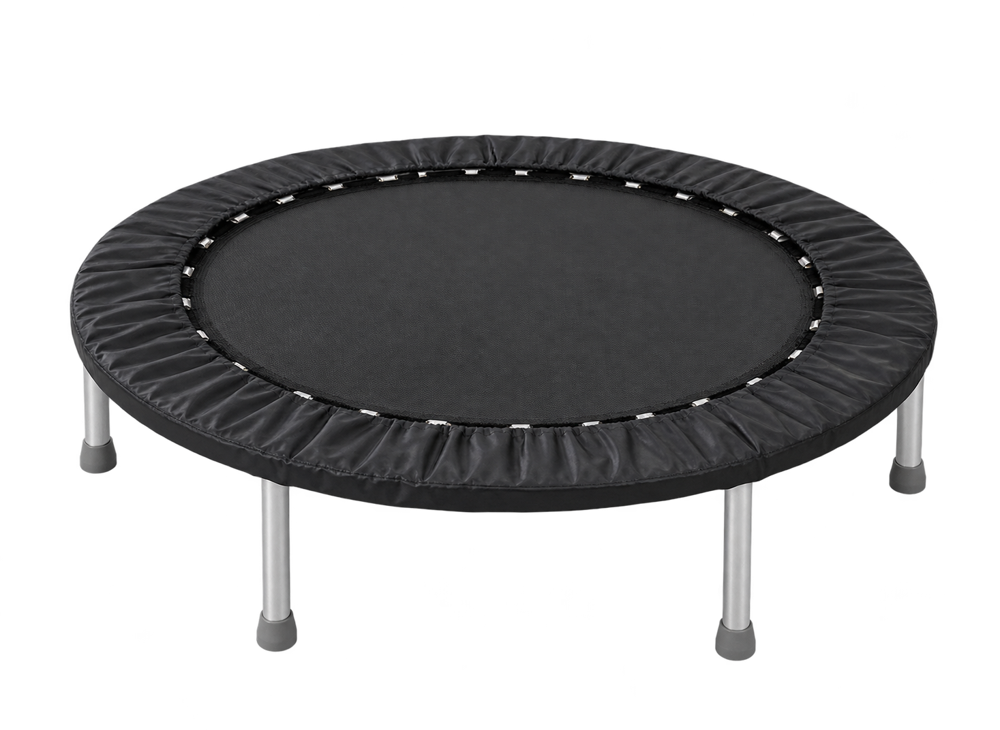
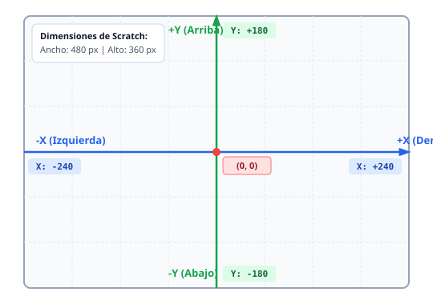
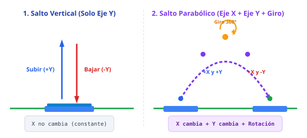
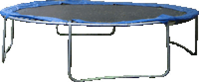
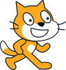
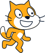

Proyecto 1: Acrobacias en el Trampolín
Aprende los fundamentos de Scratch: coordenadas cartesianas, bucles, animación cuadro a cuadro y rotación espacial para programar un gato gimnasta que bota y hace volteretas entre dos trampolines.
🎯 1. El Objetivo del Proyecto
Antes de ponernos a encajar bloques en Scratch, experimenta con el resultado final. Observa con atención qué hace el personaje:
Secuencia de la acrobacia:
- Comienza en reposo sobre el Trampolín 1 (izquierda).
- Da 3 botes verticales para ganar impulso.
- Hace un salto mortal con voltereta de 360° hacia el Trampolín 2 (derecha).
- Aterriza, da 3 botes verticales en el segundo trampolín.
- Realiza un salto acrobático de vuelta aterrizando de nuevo en la posición inicial.

🧠 2. Las Herramientas del Programador (Conceptos Clave)
Para poder resolver este reto sin copiar a ciegas, necesitas dominar cinco conceptos esenciales de Scratch:
El Plano Cartesiano en Scratch: Ejes X e Y
En Scratch, cualquier objeto se sitúa en un escenario de 480 píxeles de ancho y 360 píxeles de alto. El centro exacto de la pantalla es el punto (0, 0).

- Eje X (Horizontal): Si te mueves a la derecha, X aumenta (hasta +240). Si te mueves a la izquierda, X disminuye (hasta -240).
- Eje Y (Vertical): Si subes hacia el cielo, Y aumenta (hasta +180). Si caes hacia el suelo, Y disminuye (hasta -180).
al hacer clic en @greenFlag
ir a x: (-132) y: (-57)
apuntar en dirección (90)
Animación Fluida vs Teletransporte
Si intentas hacer saltar al gato usando solo dar a y el valor (50) y luego dar a y el valor (-50), el ordenador ejecuta las órdenes en millonésimas de segundo y el gato parecerá parpadear o teletransportarse.
Para crear una ilusión de movimiento suave como en las películas de animación, cambiamos la posición poco a poco en pequeños pasos con una pausa diminuta:

repetir (10)
sumar a y (10)
esperar (0.05) segundos
fin
repetir (10)
sumar a y (-10)
esperar (0.05) segundos
fin
0.05 segundos, cada salto completo (10 pasos subiendo + 10 bajando = 20 pasos) tarda exactamente 1 segundo. ¡Se ve natural y realista!
Bucles Anidados (Un bucle dentro de otro)
Si queremos que el gato bote 3 veces seguidas, un programador principiante copiaría y pegaría los bloques de subir y bajar 3 veces consecutivas. Pero los buenos programadores aplican el principio DRY (Don't Repeat Yourself).
Podemos meter todo el ciclo del salto dentro de un bloque repetir (3):
repetir (3)
repetir (10)
sumar a y (10)
esperar (0.05) segundos
fin
repetir (10)
sumar a y (-10)
esperar (0.05) segundos
fin
fin
El Salto Parabólico y la Voltereta de 360°
Para saltar de un trampolín al otro, el personaje debe desplazarse en horizontal al mismo tiempo que sube y baja. Eso genera una curva parabólica:
- En la subida: sumamos a
yun valor positivo (+10) y axun valor positivo (+12.5). - En la bajada: sumamos a
yun valor negativo (-10) pero axseguimos sumando positivo (+12.5) para que avance.
360° ÷ 20 pasos = 18° por cada paso.
Al girar en cada ciclo del bucle, el gato realiza una acrobacia continua y cae exactamente de pie.
🛠️ 3. Misiones Guiadas para Construir tu Proyecto
Abre una nueva pestaña en scratch.mit.edu y sigue estas misiones en orden.
Misión 1: Prepara el Escenario y los Objetos
1. En la esquina inferior derecha de Scratch, añade un fondo a tu gusto (por ejemplo Blue Sky o un gimnasio).
2. Busca en la biblioteca de objetos el objeto "Trampoline" (trampolín).
3. Duplica el trampolín para tener dos: Trampoline y Trampoline2.
4. Coloca el primer trampolín en x: -150, y: -153 y el segundo en x: 109, y: -152.
5. Selecciona el Objeto1 (el gato) para empezar a programar su código.
Misión 2: El Despegue y la Posición de Salida
Comienza con el bloque de evento y fija las coordenadas iniciales del gato justo encima del primer trampolín.
al hacer clic en @greenFlag
ir a x: (-132) y: (-57)
apuntar en dirección (90)
Misión 3: El Triple Rebote en el Primer Trampolín
Une debajo el bucle anidado que hace que el gato suba 100 píxeles y baje 100 píxeles, repitiendo la acción 3 veces seguidas.
repetir (3)
repetir (10)
sumar a y (10)
esperar (0.05) segundos
fin
repetir (10)
sumar a y (-10)
esperar (0.05) segundos
fin
fin
Misión 4: El Gran Salto Mortal hacia el Segundo Trampolín
Ahora añade los dos bucles que forman la parábola hacia la derecha:
1. Ascenso con giro: Sumar 10 a Y, avanzar 12.5 en X y girar a la derecha.
2. Descenso con avance: Sumar -10 a Y, avanzar 12.5 en X y completar el giro a la derecha.
3. Al aterrizar, añade un bloque de seguridad ir a x: (118) y: (-57) y apuntar en dirección (90) para asegurar que queda perfectamente centrado y en pie.
Misión 5: Rebotes en el Trampolín 2 y Regreso
Por último:
1. Vuelve a repetir 3 botes verticales sobre el segundo trampolín.
2. Programa el salto de regreso: ¿Qué valores deben cambiar?
En lugar de sumar positivo a X, deberás sumar a x (-12.5) para retroceder, y rotar en sentido inverso ( girar a la izquierda o usar grados negativos).
🔍 4. Pistas y Código de Referencia
Si te has atascado en algún paso, abre los acordeones siguientes para consultar pistas o comprobar la solución completa:
Si tu gato no cae de pie en dirección 90°, revisa los grados que gira en cada repetición. Recuerda que una vuelta son 360°. Además, puedes colocar siempre justo después del aterrizaje el bloque azul apuntar en dirección (90) para corregir cualquier pequeño desfase de ángulo.
El trampolín 1 está en X = -132 y el trampolín 2 en X = 118. La distancia total que debe recorrer el gato es:
118 - (-132) = 250 píxeles.
Si el salto dura 20 pasos (10 subiendo + 10 bajando), en cada paso debe avanzar:
250 píxeles ÷ 20 pasos = 12.5 píxeles por cada repetición.
Aquí tienes la estructura completa del script que va dentro de Objeto1:
al hacer clic en @greenFlag
ir a x: (-132) y: (-57)
apuntar en dirección (90)
repetir (3)
repetir (10)
sumar a y (10)
esperar (0.05) segundos
fin
repetir (10)
sumar a y (-10)
esperar (0.05) segundos
fin
fin
repetir (10)
sumar a y (10)
girar @turnRight (12) grados
esperar (0.05) segundos
girar @turnRight (12) grados
sumar a x (12.5)
fin
repetir (10)
sumar a y (-10)
sumar a x (12.5)
girar @turnRight (12) grados
esperar (0.05) segundos
fin
esperar (0.02) segundos
ir a x: (118) y: (-57)
apuntar en dirección (90)
repetir (3)
repetir (10)
sumar a y (10)
esperar (0.05) segundos
fin
repetir (10)
sumar a y (-10)
esperar (0.05) segundos
fin
fin
repetir (10)
sumar a y (10)
girar @turnLeft (12) grados
esperar (0.05) segundos
girar @turnLeft (12) grados
sumar a x (-12.5)
fin
repetir (10)
sumar a y (-10)
sumar a x (-12.5)
girar @turnLeft (12) grados
esperar (0.05) segundos
fin
🚀 5. Desafíos Pro (Ampliación)
¿Ya has terminado la animación básica? ¡Lleva tu proyecto al siguiente nivel con estos retos opcionales!
Efectos de Sonido
Añade el bloque morado iniciar sonido [pop] cada vez que el gato descienda y toque la tela del trampolín.
Cambio de Disfraz
Usa cambiar disfraz a [disfraz2] mientras vuela por los aires y vuelve a [disfraz1] al tocar el suelo para que flexione las piernas.
Control con Teclado
Haz que el gato rebote continuamente sobre el trampolín hasta que el jugador presione la tecla ESPACIO, momento en el que ejecutará el salto acrobático.
📝 6. Test de Autocomprobación
Comprueba si has entendido los conceptos antes de entregar la actividad al profesor:
1. ¿Qué coordenada debes cambiar si quieres que un personaje suba hacia arriba en el escenario?
2. ¿Por qué es fundamental poner "ir a x: ... y: ..." al hacer clic en Bandera Verde?
3. Si queremos que el gato avance hacia el trampolín de la izquierda, ¿qué cambio debemos hacer en X?
📦 7. Materiales del Proyecto para Descargar
Descarga los recursos necesarios con fondo transparente y efectos de audio para importarlos directamente en tu proyecto de Scratch:

Trampolín
Objeto principal del escenario donde rebota el personaje.
📥 Descargar PNG

Gato (Disfraz 1)
Disfraz en posición erguida para el impulso y despegue.
📥 Descargar SVG

Gato (Disfraz 2)
Disfraz con extremidades en movimiento para el vuelo.
📥 Descargar SVG
Sonido "Pop"
Efecto sonoro para el rebote al hacer contacto con la lona.
📥 Descargar WAV